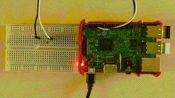

If you want to let a LED blink or measure the temperature in your room, you can use SmallBASIC on a Raspberry PI. As an example you can connect a LED and a resistor to a GPIO-Pin of your Raspberry Pi, write a short SmallBASIC programm and enjoy the blinking LED:
import gpio
const PIN_GPIO4 = 4
gpio.SetOutput(PIN_GPIO4)
for ii = 1 to 5
gpio.Write(PIN_GPIO4, 1)
delay(500)
gpio.Write(PIN_GPIO4, 0)
delay(500)
next
July 31 2025: Add support for ST7789 color TFT displays
July 11 2025: SmallBASIC PiGPIO 2 supports now all Pi’s from Zero to 5. It can even run on other LINUX systems. The API got a complete rewrite and is therefore not anymore compatible with SmallBASIC PiGPIO 1.